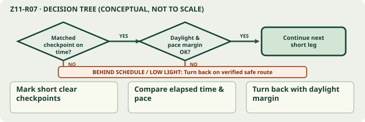

Z11-R07 · Navigation, weather and rescue · Reconstruction draft
Set checkpoint intervals, pace estimates and turnaround margins
Break a route into short verifiable legs so navigation drift and schedule delays are caught early.
Lineage · B014 reconstruction · r01 slot R07 (original B014-P07 missing)
When it applies · Planning and walking backcountry routes where terrain, snow or group pace can slow progress; reconstructs missing B014-P07.
Equipment · Map with marked checkpoints, watch and daylight sunset time.

Actions
- Divide the route into unmistakable checkpoints (signed junctions, bridges, stream confluences, ridge saddles) spaced close enough to verify progress regularly.[E01, N03, ED]
- Estimate travel time conservatively for the slowest group member, steep climbs and poor footing, setting an explicit turnaround time that preserves generous daylight margin.[E11, E01, ED]
- Compare actual elapsed time against planned time at every checkpoint—if you reach checkpoint two far behind schedule, adjust or turn back while energy remains high.[E01, E11, ED]
Failure recognition · Hiking steadily without checking elapsed time until sunset leaves the party two hours from the trailhead in falling temperatures.[E01, E11]
Verify · At each checkpoint, confirm the map match, actual time remaining before sunset and whether the group still holds its return margin.[E01, ED]
Stop or change course · When remaining daylight, worsening weather or slowed pace consumes the return margin, turn back immediately along the known safe route.[E01, T06, E18]
Evidence and editorial notes
- E01 · Minnesota DNR · Safety in State Forests (current web edition)
- Section: Before your trip and while visiting · Conditions: State-forest travel and backcountry planning
Support: Know the route, check conditions, carry navigation and safety equipment and share trip details.
Limitations: Conditions and trail maintenance vary seasonally across forest units. · Conflicting evidence: None; aligns with NPS-H.
Editorial note: Foundation for trip planning and pre-departure risk checks. · Specialist reviewer: Land management and search and rescue
Primary source · checked 2026-11-24 - E11 · NPS · Hike Smart (current web edition)
- Section: Plan your hike; Stay together · Conditions: Groups on hiking routes
Support: Choose a route suited to the group's abilities and hike at a pace that keeps the group together.
Limitations: Fast hikers moving ahead at junctions is a leading driver of preventable separation. · Conflicting evidence: None; aligns with SAR prevention principles.
Editorial note: Core reference for group accountability and pacing cards. · Specialist reviewer: Group leaders and search and rescue
Primary source · checked 2026-11-24 - E18 · NWS · Thunderstorm Safety (current web edition)
- Section: Thunderstorm Safety > Hail, Downbursts, and Flooding · Conditions: Approaching severe thunderstorm with hail, outflow gusts, or heavy rain
Support: Outflow gusts, hail, lightning, and flash runoff can strike before rain arrives at camp; break exposed ridge travel early and secure or vacate lightweight shelters.
Limitations: Storm cells can intensify faster than backcountry foot travel can clear exposed terrain. · Conflicting evidence: None; integrates with E04 and E07.
Editorial note: Connects storm-structure warning cues to early shelter selection. · Specialist reviewer: Weather safety and emergency management
Primary source · checked 2026-11-24 - N03 · USGS · What is a Topographic Map (current web edition)
- Section: What is a Topographic Map > Contours and Relief · Conditions: Matching three-dimensional terrain shapes to two-dimensional contour lines
Support: Closed contour rings denote peaks or depressions (hachured), V-patterns point uphill in valleys/drainages and wide spacing marks gentle slopes while tight spacing marks cliffs or steep grades.
Limitations: Dense forest canopy or snow drifts can obscure subtle terrain features shown on the map. · Conflicting evidence: None; core topographic terrain-association evidence.
Editorial note: Supports ridge, valley, saddle and handrail terrain-interpretation cards. · Specialist reviewer: Navigation and cartography
Primary source · checked 2026-11-24
Current assessment · A04-N03 (2026-11-25) · Open: support partial or missing (A04): Contours and depression symbols supported. The broad V/uphill and cliff inference depend on drawing context and saddle/ridge distinction; require dedicated examples. Limits: Specialist review PENDING (Navigation and cartography); publication HOLD. All release decisions pending. - T06 · NPS · Outdoor Emergency Plan (current web edition)
- Section: If you get lost or hurt; call for help · Conditions: Outdoor US emergency
Support: Communicate location, last known point, situation and needs. Stay put when unable to establish a safe route unless immediate danger requires movement.
Limitations: Cell signal is unreliable in backcountry terrain; pre-trip plans bridge communication gaps. · Conflicting evidence: None; core lost-person decision rule.
Editorial note: Foundation for stay/signal/move and dispatch handoff cards. · Specialist reviewer: Search and rescue
Primary source · checked 2026-11-24
Source lineage · B014 reconstruction · r01 slot R07 (original B014-P07 missing) · Classification · Reconstruction draft.